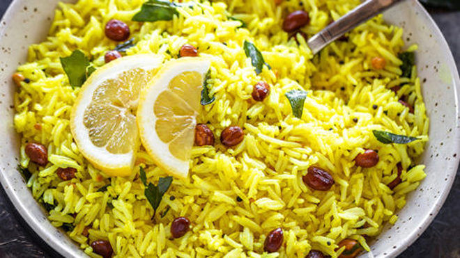

Lemon Rice Recipe
INGREDIENTS
- 1 cup rice 200 grams, I used basmati rice
- 1.5 cups water 12 oz
- 1/4 + 1/8 teaspoon salt or to taste
- 2-2.5 tablespoons lemon juice or to taste
- 1/2 teaspoon urad dal (dhuli) soaked for 10 minutes
- 1/2 teaspoon chana dal soaked for 10 minutes
- 1 tablespoon oil
- 2 tablespoons peanuts raw
- 1/2 teaspoon mustard seeds
- 12-14 curry leaves
- 1 green chili sliced, or to taste
- 1/4 teaspoon turmeric powder
- generous pinch hing also known as asafoetida
-
INGREDIENTS
- Rinse rice until water turns clear.
- Then transfer to a pressure cooker with 1.5 cups water.
- Cook on high heat for 2 to 3 whistles.
- You can also cook in your Instant pot, high pressure for 5 minutes with natural pressure release.
- Meanwhile soak urad dal and chana dal in water for 10 to 15 minutes as the rice cooks.
- Then drain the water from the dals and set aside.
- Once the rice is cooked, fluff it with a fork and transfer to a large bowl and let it cool down.
- Then add the salt and the lemon juice and mix well until combined and set it aside.
- Heat 1 tablespoon oil in a small pan on medium heat.
- Once the oil is hot, add the peanuts to the pan.
- Cook the peanuts until roasted and they turn light golden brown.
- Don't burn them.
- Remove peanuts on a plate lined with paper towel.
- To the same pan, now add mustard seeds and let them pop.
- Add the soaked & drained dal to the pan.
- Saute until they turn light golden brown.
- Add the curry leaves and chili.
Saute for few seconds.
Then add the turmeric, hing and mix.
Remove pan from heat.
- Transfer tempering to rice along with the roasted peanuts.
- Mix all the seasoning well with the rice.
- Adjust salt and lemon juice to taste at this point.
- Serve lemon rice with a side of pickle!
